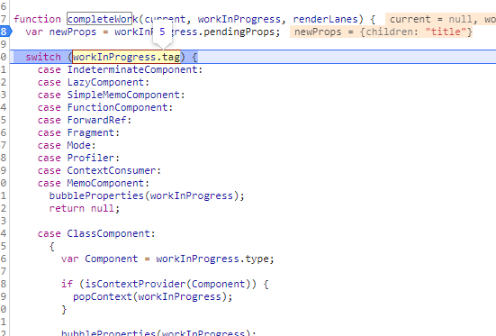

这里说一下 mount时候的beginWork和completeWork的流程吧
mount递归
断点调试
render阶段的递阶段起点是beginWork，归阶段的起点是completeWork，那我们就在源码上打断点。
应用demo如下
刷新页面正式进入调试。
1.发现第一次进入页面beginWork中，current有值，并且此时的tag是等于3的，之前说的我们在createFiberRoot的那个阶段这个tag也等于三，我们不妨猜测这个tag为3指的是 fiberRootNode
找到react-reconciler包下的ReactWorkTag，可以看到tag = 3对应的是叫 HostRoot的tag
2.点击下一个断点
我们发现current的值为null（之前说过，只有根节点才存在current值，而其他节点只存在workInProgress）
且当前节点的elementType为function App()，也就是写的一个app函数
之后就是div了，然后是div的子节点header
之后又想走header的子节点title（其实这里算不上是子节点，只是个文本节点，react对文本节点进行了优化，无自己的beginWork，react会对只有唯一一个文本子节点的节点，做了优化，这样这个文本节点无自己的fiber节点，也就是不走beginWork）
因为header的文本节点不算，所以直接进入了header节点的completeWork的阶段
之后header 归阶段结束，会去找header的sibling，也就是兄弟节点，兄弟节点进入beginWork（递阶段）
就这样以此往复深度优先遍历
之后走完main，发现main无兄弟了，就开始走main父节点的completeWork阶段也就是div，然后就这样一直走，走到了App的completeWork然后走到了 rootFiber结束
这时候一个render阶段就结束了
beginWork做了啥？
这里我们以 走到第二步的div节点举例子
1. 依照tag判断component类型
首先根据当前的workInProgress的tag进入不同的Component处理逻辑
这里的div节点，tag为5，进入的是 HostComponent的处理逻辑
2. updateHostComponents$1
首先会对一些参数做赋值操作，之后用isDirectTextChild字段判断当前节点是否只有一个文本节点（上面提到了），如果是，则不会去创建这个文本节点的fiber，算是react的一个优化手段
3. reconcileChildren
从名字可以看出这个玩意应该是reconciler调试器的比较重要的函数。这个函数就是用来创建当前节点的子节点的
- 对于
mount的组件，他会创建新的子Fiber节点 - 对于
update的组件，他会将当前组件与该组件在上次更新时对应的Fiber节点比较（也就是俗称的Diff算法），将比较的结果生成新Fiber节点
如果当前不存在current就走mountChildFibers，否者就走reconcileChildFibers
也就是说存在current的时候是整个应用的根节点了
我们找到ReactChildFiber这个文件
找到reconcileChildFibers和 mountChildFibers
从代码可以看出，和
beginWork一样，他也是通过current === null ?区分mount与update。
发现这两个走的都是同一个函数，只是参数不一样
4. 打上不一样的effectTag或者直接return
上面的 childReconciler的参数 代表的是否追踪副作用
例如下面的这个deleteChild函数是表示删除当前节点的子节点的操作
function deleteChild(returnFiber: Fiber, childToDelete: Fiber): void {
if (!shouldTrackSideEffects) {
// Noop.
return;
}
const deletions = returnFiber.deletions;
if (deletions === null) {
returnFiber.deletions = [childToDelete];
returnFiber.flags |= ChildDeletion;
} else {
deletions.push(childToDelete);
}
}如果说需要追踪副作用的话，会给删除节点的fiber打上一个flags
搜索reactFiberFlags文件看这些Flags都有些啥
众所周知，render阶段不会操作dom的，commit阶段才会，所以render阶段这个flags的操作只是为了为fiber打上tag告诉后续这个节点要进行什么操作
为什么是二进制掩码格式的flags呢？
这里有一种情况
举个例子：
当一个fiber节点需要插入并且需要更新属性的话
那就得绑定2个flags，一个是 Update一个是 Placement
这里用二进制的话就可以直接进行按位 或的操作
const effectTag = NoEffect;
effectTag |= Update;
effectTag |= Placement;
(effectTag & PlacementAndUpdate) !== NoEffect; // true无论如何最终，都会走到reconcileChildFibers这个方法里头，而这个方法是写在 ChildReconciler函数的，总而言之就是加了一层去判断是否要追踪副作用。
5. reconcileChildFibers
这个方法中会判断当前child的类型，进而对不同的类型做不一样的操作
主要分为两个大类
- type === ‘object’
- type === ‘string’
当然最需要细分的就是为object的情况，里头还包括了child是children等情形
我们走到object里头细看一下，假设我们现在走到了一个节点是这样的
<header>
<span>title</span>
</header>
那他就会去调用 reconcileSingleElement的方法
最终这个方法会走到createFiberFromElement
也就是通过reactElement的数据创建一个fiber节点
并且这个方法内部会调用一个方法叫做``createFiberFromTypeAndProps`
在这个方法的内部会根据当前的component type去走不同的逻辑
这里呢直接将fibertag 赋值为了HostComponent
接下来去创建对应的fiber节点，调用createFiber，也就是
new了一个 FiberNode，这里头的属性在Fiber那篇讲了一下。
总结
最终他会生成新的子Fiber节点并赋值给workInProgress.child，作为本次beginWork返回值 ，并作为下次performUnitOfWork执行时workInProgress的传参。
要注意的点是，当你调用reconcileChildFibers时候子节点可能是一个数组，这种情况react仍然是只针对数组的第一个元素创建fiber
completeWork做了啥？
1. 根据fiber节点的tag进入不同的case
这里首先进入completeWork阶段的时候span标签
function App() {
return (
<div className="node1">
<header>
<span>title</span>
</header>
<main>
main
<p>test</p>
</main>
</div>
);
}
这里是span 标签所以先进入 HostComponent的case逻辑
事先判断current是否是空，首次渲染非fiberRoot不存current
接下来比较重要的是创建一个dom叫做createInstance
2. createInstance
createInstance会去 通过 createElement创建一个dom元素
这里domElement就是一个span
之后返回一个instance去执行appendAllChidren函数，由于span是我们第一个创建的元素，所以append会被跳过
3. 保存创建出来的dom到fiber节点的stateNode中
workInProgress.stateNode = instance;4. 将属性绑定到创建出来的dom元素上
执行finalizerInitialChildren, 将所有的属性绑到我们新创建的dom元素上面，到这里一个节点span的completework就大致完成了
⭐appendAllChildren逻辑
appendAllChildren的原理是，主要是将已经创建好的fiber节点挂载到当前的节点下。
这也就是为什么之前上面的span的标签第一次创建的时候不走这个的逻辑的原因
走到了APP时候，就构建了一颗完整的fiber树了